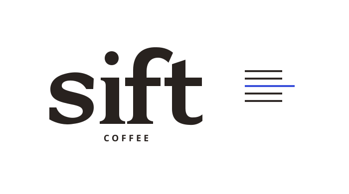
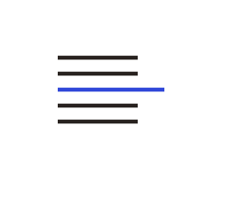
Good coffee.
Clearly chosen.
Brand Strategy & Identity
A contemporary pantry identity.
Three coffees. Three clear starting points.
Self-initiated studio project
Authored by Creative Media. This guide documents a designed concept and its inspectable source system. Product data is illustrative; no commercial launch or physical print proof is claimed.
A small collection.
A clear point of view.
For curious home brewers, Sift is a carefully edited coffee brand that makes choosing and brewing feel clear through a small collection, useful guidance and precise design.
What the identity solves
The challenge is information hierarchy: communicate the differences between three coffees while preserving one recognisable brand.
The audience is a concept hypothesis: people beginning to improve their daily cup, alongside experienced brewers who appreciate a clear selection. Demand has not been researched.
The four questions
- Which coffee is this?
- What might it taste like?
- How should I start brewing it?
- Which format am I buying?
Why “Sift”
The name suggests selecting, refining and finding what matters. It supports careful choices without illustrating a sieve or a coffee bean.
Everyday is a comfortable starting point. Daybreak offers a brighter direction. After Hours offers a deeper one.
Working brand name. Business-name, domain and trademark availability are unverified.
Warm, direct, quietly curious.
Use
“A bright cup with apricot and citrus notes.”
Explain a specialist term when it helps a choice. Address the brewer as “you”. Let the product name and description do the work.
Avoid
Unexplained jargon, invented founder stories, testimonials or sourcing relationships. “Best”, “healthiest” and ethical superiority require evidence.
Primary tagline: Good coffee. Clearly chosen.
Supporting line: Three coffees. Three clear starting points.
One name.
Useful variations.
The lowercase wordmark is authored vector artwork. It is distinct from the editorial typeface. Use supplied masters; do not retype or regenerate it.
Primary horizontal lockup / Wordmark plus COFFEE descriptor.
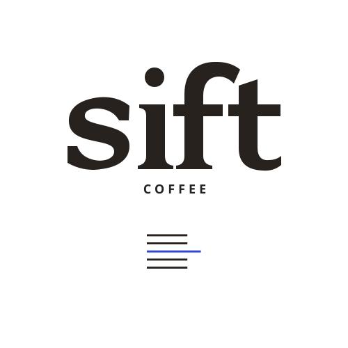
Stacked lockup / Use in a compact, vertically oriented space.
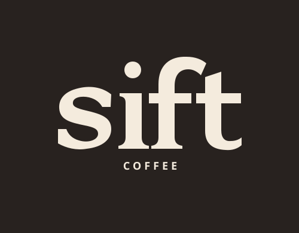
Reverse lockup / Warm Paper on Coffee Ink.
Wordmark alone
Use where the full brand name is already clear. The canonical written name stays Sift Coffee.
Selected-rule symbol
Use for an icon or annotation. Keep it separate from the wordmark; it is a choice device, not a taste score.
Never stretch, add outlines, apply shadows, rotate, change optical spacing or reconstruct the lockup using a font. Use approved single-colour masters on stable backgrounds.
The details must
survive the scale.
Clear space equals the height of the wordmark’s i stem. This unit comes from the actual vector, rather than the surrounding font metrics.
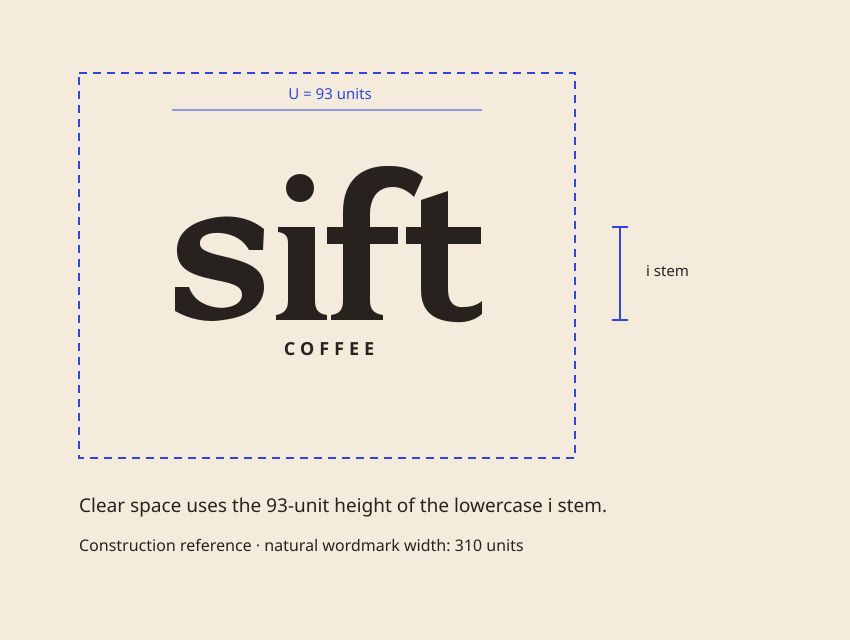
Clear-space diagram / Keep unrelated text, trim, imagery and other marks outside this area.
Digital size exploration
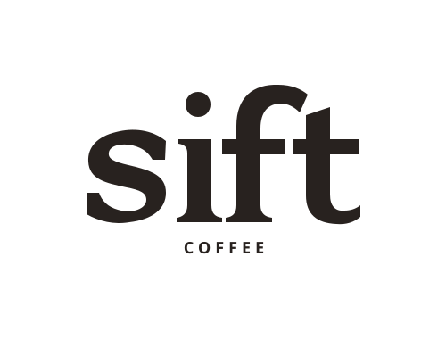
176 px visible wordmark / 284 px SVG container.
64 px visible wordmark / 79 px SVG container.
Digital recommendation
Use the complete lockup from 176 px visible wordmark width. Use the small optical wordmark from 64 px visible width, with nearby Sift Coffee context. Below that, use the symbol where the brand is already identified.
What the check establishes
This is a rendered digital exploration at 100% screen scale. Padded SVG containers are wider than the visible mark. Physical minimums require a printed proof, substrate and production method.
Six colours.
Clear roles.
Paper and Ink carry approximately four-fifths of a composition. Cobalt identifies selection. Roast adds warmth. Written product names remain meaningful in grayscale.
Warm Paper
#F4EBDD / Main canvas and labels.
Coffee Ink text.
Coffee Ink
#28221F / Logo and information.
Warm Paper reverse text.
Cobalt
#3047D9 / Selected Line, Daybreak.
Warm Paper text.
Roast Orange
#C56339 / Everyday identifier.
Decorative or large type only.
Paper Mist
#D9D9D0 / Secondary panels.
Coffee Ink text.
Proof White
#FFFFFF / Flat proof backgrounds.
Coffee Ink text.
| Pair | Contrast | Permitted text use |
|---|---|---|
| Ink / Paper | 13.28:1 | Ordinary text, either direction. |
| Paper / Cobalt | 5.87:1 | Ordinary text. |
| Ink / Mist | 11.04:1 | Ordinary text. |
| Ink / White | 15.69:1 | Ordinary text. |
| Ink / Roast | 3.90:1 | Large qualifying text or non-text. |
| Roast / Paper | 3.41:1 | Large qualifying text or decoration. |
Ratios use the exact solid sRGB HEX values. Ordinary text needs 4.5:1; qualifying large text needs 3:1. Important state/control graphics need 3:1. These pair checks do not audit textured photography, opacity or a whole interface. Small facts never sit on Roast.
Print conversion needs a supplier profile and physical proof. No CMYK or Pantone equivalence is supplied.
Expressive titles.
Useful information.
A clear
starting point.
Use for headlines and collection storytelling. It does not replace the authored logo. Avoid very light weights over textured imagery.
Daybreak
Apricot · citrus · floral
WHOLE BEAN COFFEE
250 g
Use for facts, names, navigation and measurements. Short technical labels may be uppercase; paragraphs use sentence case.
قهوة مختارة بعناية
ثلاثة أنواع من القهوة. ثلاث بدايات واضحة.
The approved descriptor reads “Carefully selected coffee”. The second line is a draft companion translation for local review. Preserve natural joining, Arabic line height and reading direction. Never add tracking to imitate Latin display type.
| Role | Practical starting point | Rule |
|---|---|---|
| Editorial headline | Fraunces 36-60 px / 1.08-1.2 | Generous space; natural wrapping. |
| Body and facts | Manrope 14-18 px / 1.55-1.75 | Comfortable reading before decoration. |
| Arabic body | Plex Arabic 16-20 px / 1.75-1.9 | Optical balance, never forced baselines. |
| Short technical label | Manrope 10-12 px / 1.4 | Uppercase only when useful. |
The guide loads self-hosted font files. Sources and licence notices are recorded in the handoff. Display and shaping are visually checked here; final print sizes and market-language copy need their own review.
Five rules.
One selected line.
The motif represents identifying a useful choice within a collection. It is a repeatable graphic device, never a strength rating, taste scale or measured score.
Construction
Use an eight-part width grid. Four rules occupy six parts. The selected rule occupies eight. Keep the longer cobalt rule in the middle in the master.
All five rules are horizontal and parallel. Spacing and stroke weight come from the supplied vector. Never add a sixth rule or turn it into a barcode.
Application
Use as a label divider, image-caption device, bag side-panel motif or small icon. Move the longer line only when it points to an actual selected item.
The symbol can be reproduced in one colour when the medium requires it; length still communicates the selection.
100 px / Diagram and editorial use.
48 px / Small digital mark.
24 px / Inspect separation at native scale.
Digital samples are recorded in the proof pack. For stitching, foil, embossing or rough substrates, obtain a production sample before declaring a usable minimum.
Different coffees.
One clear system.
The front label introduces the choice. Supporting facts follow without competing with the name. These are fictional product records, not supplier or tasting evidence.
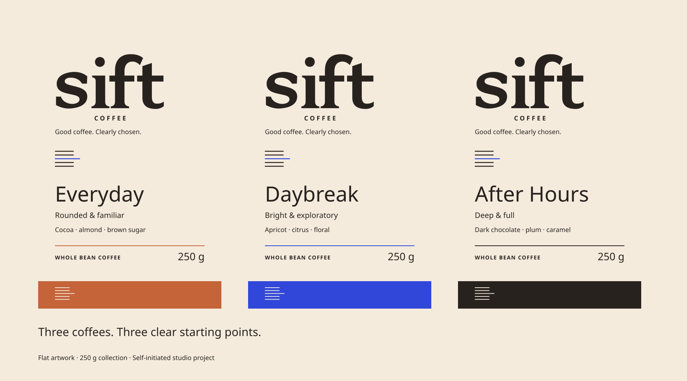
Everyday / Roast
Cocoa · almond · brown sugar.
Brazil / Colombia blend.
Natural / washed. Medium.
Espresso or moka pot.
Daybreak / Cobalt
Apricot · citrus · floral.
Ethiopia single origin.
Washed. Light.
Pour-over.
After Hours / Ink
Dark chocolate · plum · caramel.
Colombia single origin.
Washed. Medium-dark.
Espresso or French press.
Exact front-reading order
- Sift wordmark.
- Canonical product name.
- Flavour direction.
- Three tasting notes.
- WHOLE BEAN COFFEE.
- Net weight: 250 g or 1 kg.
Information follows the decision
Origin, process, roast description, variable roast-date and batch fields, and guidance belong on the reverse or side. After Hours does not mean decaf; add no sleep-related claims.
If a sales design needs a price: “$14.00 / 250 g”, explicitly marked sample pricing. No actual sale is represented.
Arabic belongs
in the system.
English is the content master. Arabic is given a considered companion space with natural shaping, adequate line height and a genuine reading order.
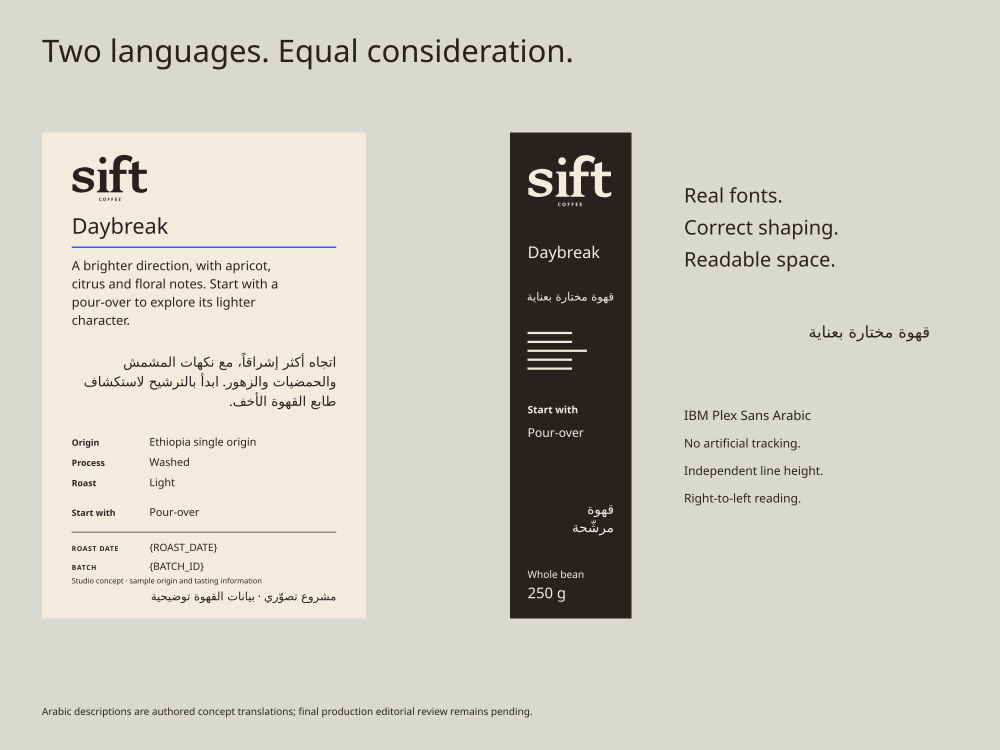
Actual authored bilingual panel artwork. Translation copy remains subject to independent review; market-specific food information must be supplied before print.
Preserve the meaning
Keep canonical Latin names intact: Sift Coffee, Everyday, Daybreak and After Hours. Isolate them in Arabic paragraphs so adjacent punctuation remains ordered.
Keep numbers, units, dates and batch identifiers readable. Check mixed-script lines directly; do not mirror every element automatically.
Inspect the actual panel
Use the supplied bilingual artwork as the inspectable source. Do not ask a photo-generation model to write Arabic on a bag.
Composite exact vector/text content after generating a base scene. Review each line, not just the overall shape of the panel.
Arabic is designed and visually inspected in this guide. Independent translation review and physical printing remain separate production gates.
250 g.
And room for 1 kg.
The larger format preserves the name, product identifier and hierarchy. It creates comfortable information space rather than mechanically enlarging every element.
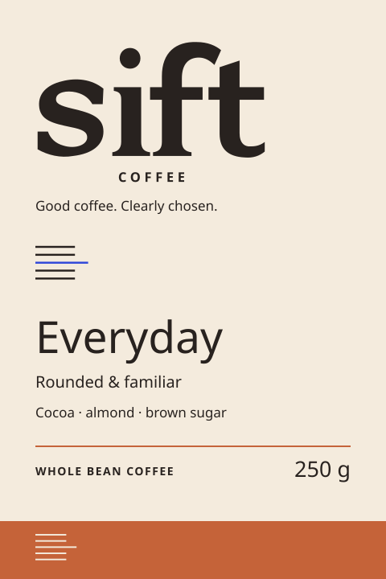
250 g / Everyday. Exploratory label geometry.
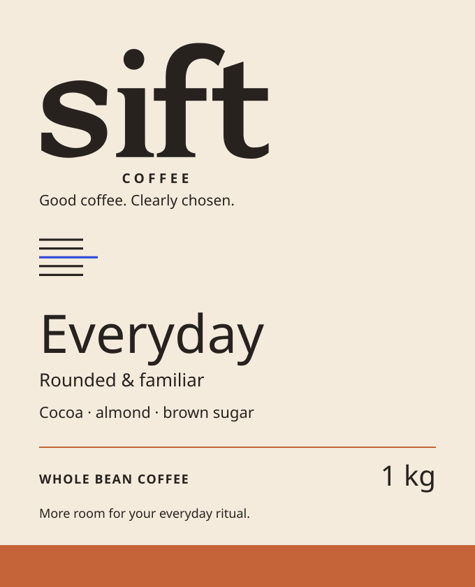
1 kg / Same identity, revised information space.
Controlled variable fields
Use the exact keys {ROAST_DATE} and {BATCH_ID} in the editable source. Leave them unfilled in the concept. Separate their labels from the mutable values.
Keep the weight clear and accurate for each format. Never turn a 250 g design into a 1 kg bag mockup without changing the artwork.
Production boundary
Exploratory dimensions are provisional. Obtain the actual supplier dieline, material specification and printing constraints before creating production files.
Market-required food, importer and contact information must be supplied. No certification mark, roast date or real batch is invented.
These are designed format studies. No bag has been manufactured, filled, weighed or physically proofed by this guide.
A system that
travels with the coffee.
Eight application families connect the product, its guidance and its delivery. Flat authored artwork makes the decisions inspectable before any physical production.
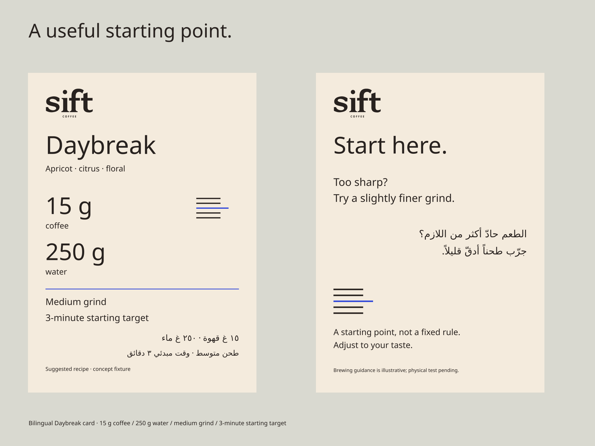
Brewing cards / A practical starting point.
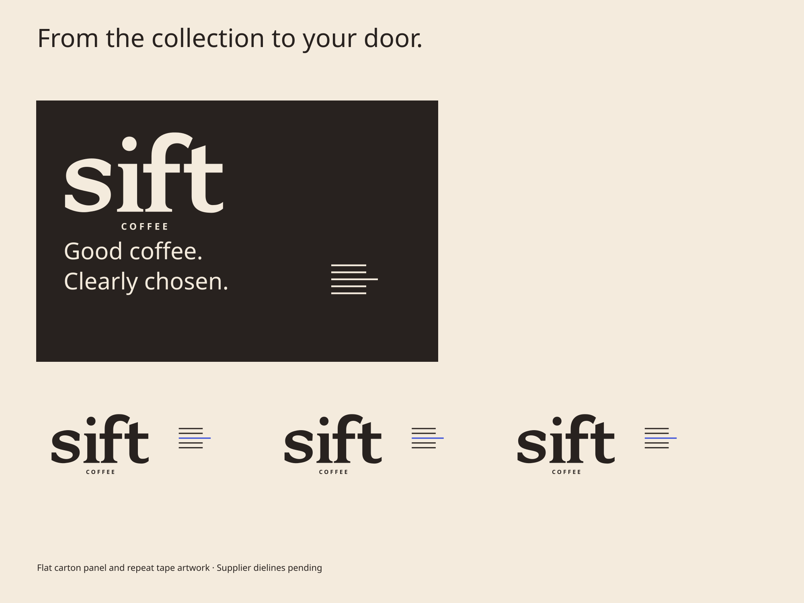
Shipping / Repeatable, restrained identification.
| Family | Consistent rule | Status in this guide |
|---|---|---|
| Three 250 g bags | One hierarchy; three written choices. | Front / reverse / side artwork. |
| 1 kg format | Same name and identifier; more information space. | Format artwork. |
| Carton and tape | Short brand marks and controlled repetition. | Flat concept artwork. |
| Brewing cards | Bilingual guidance; sample recipe identified. | Flat concept artwork. |
| Three-coffee sample box | Clear product order and insert hierarchy. | Box / insert concept artwork. |
| Wholesale sheet | Readable range facts; no supplier claims. | Illustrative information sheet. |
| Social templates | One focal product and repeatable type roles. | Editable composition sources. |
| Counter display | Names visible before supporting detail. | Flat display concept artwork. |
Daybreak sample recipe: 15 g coffee / 250 g water / medium grind / 3-minute starting target. “Too sharp? Try a slightly finer grind.” This is a fictional starting recipe, requiring a physical brewing test before publication as product guidance.
Designed to inspect.
Ready to develop.
This guide is an authored brand artifact. Its supporting SVGs keep typography and geometry inspectable; its proof record states what was actually checked.
- Wordmark system / Vector masters
- 250 g label artwork / Fronts
- Selected Line / Master motif
- Clear-space construction / Diagram
- Bilingual panel / Actual artwork
- Brewing cards / Bilingual artwork
- Shipping carton and tape / Artwork
- Sample box and insert / Artwork
- Wholesale sheet / Sample information
- Social templates / Compositions
- Counter display / Artwork
- Fraunces / Licence notice
- Manrope / Licence notice
- IBM Plex Sans Arabic / Licence notice


Checked digitally
- All 12 guide pages rendered and inspected.
- Local font files load; Arabic shaping is visible.
- Six-colour contrast pairings calculated.
- Lockups and symbol rendered at named CSS widths.
- Linked source artwork resolves locally.
- Names, tasting notes, weight and motif count checked.
Before production
- Independent Arabic copy review.
- Supplier dielines and mandatory market information.
- Physical type-size, paper and colour proof.
- Real origin, tasting and recipe validation.
- Brand-name and commercial rights clearance.
- Records of any physical or launch outcome.
Generation handoff
Load the approved Sift chapter, these exact masters and the asset register. Preserve names, hierarchy, colour values, five-rule geometry and bilingual copy. Generate a base scene where useful, then apply approved artwork exactly. Record provenance, output dimensions and unresolved production facts.